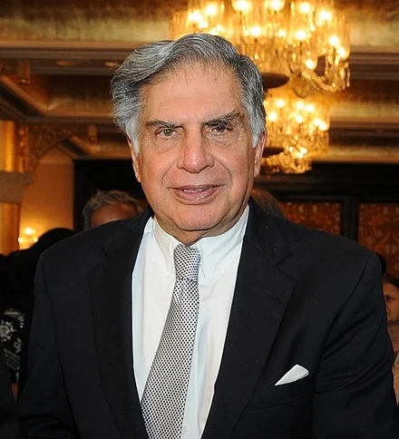
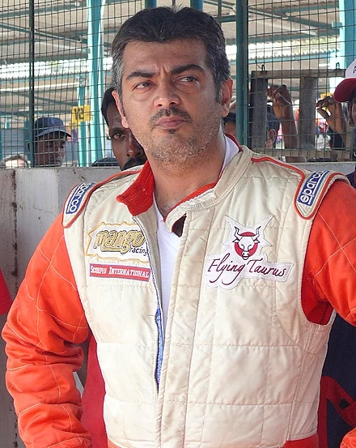

.jpg.webp)
Mahendra Singh Dhoni
Cricketer
Mahendra Singh Dhoni( born 7 July 1981) is an Indian professional cricketer who plays as a right-handed batter and a wicket-keeper

Ratan Tata
Entrepreneur
Ratan Naval Tata[a] (28 December 1937 – 9 October 2024) was an Indian industrialist and philanthropist. He served as the chairman of Tata Group and Tata Sons from 1991 to 2012

Ajithkumar
Actor and Racer
Ajith Kumar (born 1 May 1971) is an Indian actor who works predominantly in Tamil cinema.,He won Vijay Awards, Cinema Express Awards, three Filmfare Awards

Elon Musk
Entrepreneur
Elon Reeve Musk FRS (/ˈiːlɒn/; born June 28, 1971) is a businessman and investor known for his key roles in the space company SpaceX and the automotive company Tesla, Inc.